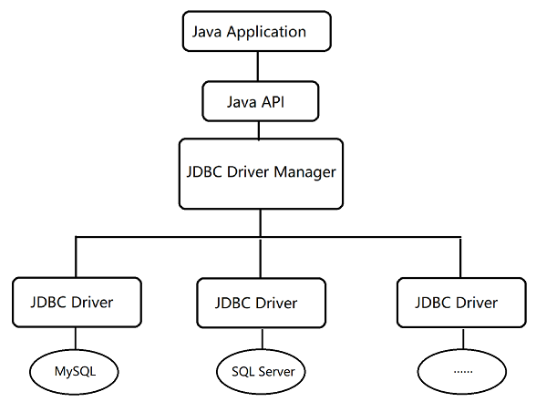
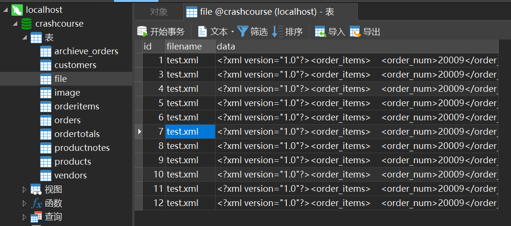
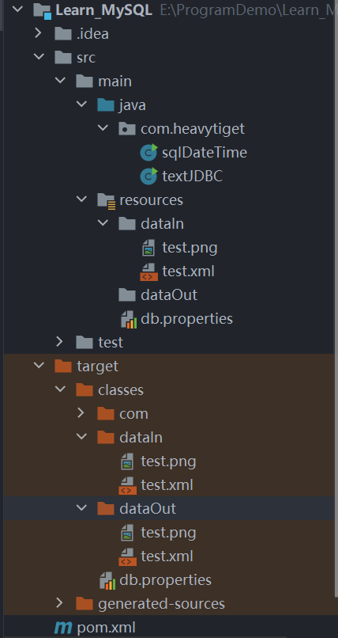
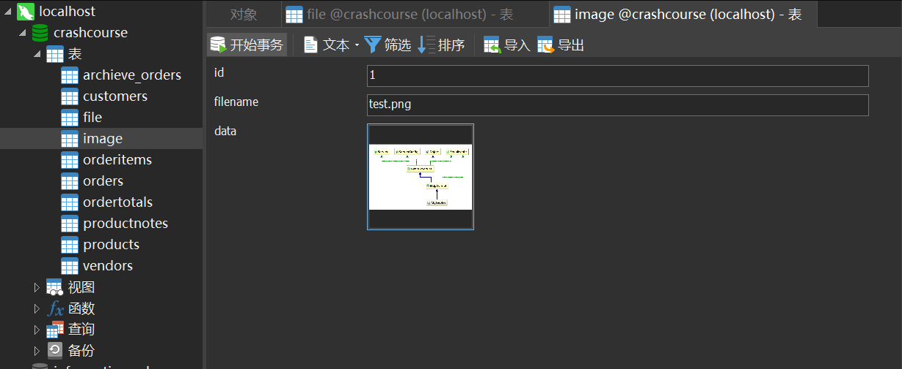

JDBC代表Java数据库连接(Java Database Connectivity)，它是用于Java编程语言和数据库之间的数据库无关连接的标准Java API，换句话说：JDBC是用于在Java语言编程中与数据库连接的API。
JDBC是什么
JDBC库包括通常与数据库使用相关，如下面提到的每个任务的API：
- 连接到数据库
- 创建SQL或MySQL语句
- 在数据库中执行SQL或MySQL查询
- 查看和修改结果记录
从根本上说，JDBC是一个规范，它提供了一整套接口，允许以一种可移植的访问底层数据库API。 Java可以用它来编写不同类型的可执行文件，如 -
- Java应用程序
- Java Applet
- Java Servlets
- Java ServerPages(JSP)
- 企业级JavaBeans(EJB)
JDBC架构
JDBC API支持用于数据库访问的两层和三层处理模型，但通常，JDBC体系结构由两层组成：
- JDBC API：提供应用程序到JDBC管理器连接。
- JDBC驱动程序API：支持JDBC管理器到驱动程序连接。
JDBC API使用驱动程序管理器并指定数据库的驱动程序来提供与异构数据库的透明连接。
JDBC驱动程序管理器确保使用正确的驱动程序来访问每个数据源。
驱动程序管理器能够支持连接到多个异构数据库的多个并发驱动程序。
架构图如图所示：

常见的JDBC组件
DriverManager：此类管理数据库驱动程序列表。 使用通信子协议将来自java应用程序的连接请求与适当的数据库驱动程序进行匹配。在JDBC下识别某个子协议的第一个驱动程序将用于建立数据库连接。Driver：此接口处理与数据库服务器的通信。我们很少会直接与Driver对象进行交互。 但会使用DriverManager对象来管理这种类型的对象。 它还提取与使用Driver对象相关的信息。Connection：此接口具有用于联系数据库的所有方法。 连接(Connection)对象表示通信上下文，即，与数据库的所有通信仅通过连接对象。Statement：使用从此接口创建的对象将SQL语句提交到数据库。 除了执行存储过程之外，一些派生接口还接受参数。ResultSet：在使用Statement对象执行SQL查询后，这些对象保存从数据库检索的数据。 它作为一个迭代器并可移动ResultSet对象查询的数据。SQLException：此类处理数据库应用程序中发生的任何错误。
驱动版本对应
MySQL :: MySQL Connector/J 8.0 Developer Guide :: 2 Compatibility with MySQL and Java Versions
- JDBC versions: Connector/J 8.0 implements JDBC 4.2. While Connector/J 8.0 works with libraries of higher JDBC versions, it returns a
SQLFeatureNotSupportedExceptionfor any calls of methods supported only by JDBC 4.3 and higher.- MySQL Server versions: Connector/J 8.0 supports MySQL 5.6, 5.7, and 8.0.
- JRE versions: Connector/J 8.0 supports JRE 8 or higher.
- JDK Required for Compilation: JDK 8.0 or higher is required for compiling Connector/J 8.0. Also, a customized JSSE provider might be required to use some later TLS versions and cipher suites when connecting to MySQL servers. For example, because Oracle’s Java 8 releases before 8u261 were shipped with JSSE implementations that support TLS up to version 1.2 only, you need a customized JSSE implementation to use TLSv1.3 on those Java 8 platforms. Oracle Java 8u261 and above do support TLSv1.3, so no customized JSSE implementation is needed.
使用MAVEN导入驱动依赖
使用Maven构建项目：
pom.xml:
1 |
|
通过Maven导入相应驱动版本的依赖
JDBC数据库连接
导入相应的驱动程序后，现在可以学习使用JDBC建立数据库连接了。
建立JDBC连接所涉及的编程相当简单。 以下是基本的四个步骤 -
- 导入JDBC包：使用Java语言的
import语句在Java代码开头位置导入所需的类。 - 注册JDBC驱动程序：使JVM将所需的驱动程序实现加载到内存中，从而可以满足JDBC请求。
- 数据库URL配置：创建一个正确格式化的地址，指向要连接到的数据库(如：MySQL,Oracle和MSSQL等等)。
- 创建连接对象：最后，调用
DriverManager对象的getConnection()方法来建立实际的数据库连接。
导入JDBC包
1 | import java.sql.* ; // for standard JDBC programs |
注册JDBC驱动
在使用程序之前，必须先注册该驱动程序。 注册驱动程序是将Oracle驱动程序的类文件加载到内存中的过程，因此可以将其用作JDBC接口的实现。
方法1 - 使用反射注册驱动
最常见的方法是使用Java的Class.forName()方法，将驱动程序的类文件动态加载到内存中，并将其自动注册。这个方法是推荐使用的方法，因为它使驱动程序注册可配置和便携。
1 | Class.forName("com.mysql.jdbc.Driver"); |
方法2 - 静态方法DriverManager.registerDriver()注册驱动
第二种方法是使用静态DriverManager.registerDriver()方法来注册驱动程序。
如果使用的是非JDK兼容的JVM(如Microsoft提供的)，则应使用registerDriver()方法。
以下示例使用registerDriver()注册Oracle驱动程序：
1 | try { |
数据库连接URL配置
加载驱动程序后，可以使用DriverManager.getConnection()方法建立连接。 为了方便参考，这里列出三个重载的DriverManager.getConnection()方法
getConnection(String url)getConnection(String url, Properties prop)getConnection(String url, String user, String password)
这里每个格式都需要一个数据库URL。 数据库URL是指向数据库的地址。
制定数据库URL是建立连接相关联的大多数错误问题发生的地方。
下表列出了常用的JDBC驱动程序名称和数据库URL：
| RDBMS | JDBC驱动程序名称 | URL格式 |
|---|---|---|
| MySQL | com.mysql.jdbc.Driver | jdbc:mysql://hostname/databaseName |
| ORACLE | oracle.jdbc.driver.OracleDriver | jdbc:oracle:thin:@hostname:portNumber:databaseName |
| PostgreSQL | org.postgresql.Driver | jdbc:postgresql://hostname:port/dbname |
| DB2 | com.ibm.db2.jdbc.net.DB2Driver | jdbc:db2:hostname:port Number/databaseName |
| Sybase | com.sybase.jdbc.SybDriver | jdbc:sybase:Tds:hostname: portNumber/databaseName |
URL格式的所有部分都是静态的，只需要根据数据库设置更改对应的部分。
使用具有用户名和密码的数据库URL
现在必须使用适当的用户名和密码调用getConnection()方法获取一个Connection对象
1 | String URL = "jdbc:mysql://hostname/databaseName"; |
使用properties进行配置
dbconf.properties:
1 | #com.mysql.jdbc.Driver 是 mysql-connector-java 5中的， |
testConn:
1 | package com.heavytiget; |
OUTPUT:
1 | D:\SourceFiles\Java\jdk-11.0.5\bin\java.exe "-javaagent:D:\SourceFiles\JetBrains\IntelliJ IDEA 2021.1.1\lib\idea_rt.jar=50331:D:\SourceFiles\JetBrains\IntelliJ IDEA 2021.1.1\bin" -Dfile.encoding=UTF-8 -classpath E:\ProgramDemo\Learn_MySQL\target\classes;C:\Users\DCM\.m2\repository\mysql\mysql-connector-java\8.0.25\mysql-connector-java-8.0.25.jar;C:\Users\DCM\.m2\repository\com\google\protobuf\protobuf-java\3.11.4\protobuf-java-3.11.4.jar com.heavytiget.textJDBC |
连接URL附加属性：
此外，在进行连接时，可以附加Attribute，使用URL附加Attribute：
例如：url=jdbc:mysql://localhost:3306/test?serverTimezone=UTC&useUnicode=true&characterEncoding=utf8&useSSL=false
| 属性 | 解释 |
|---|---|
| IP | 例如：localhost，表示本机的地址，也可以使用其他的IP地址 |
| Port | 一般是3306，MySQL默认占用3306端口 |
| Database Name | 数据库名称，例如test，crashcourse等 |
| useUnicode=true | true表示使用unicode编码 |
| characterEncoding=UTF-8 | 表示使用UTF-8字符集 |
| serverTimezone=UTC | 在MySQL 6以上需要指定时区，UTC为标准时区，Asia/Shanghai为中国时区 |
读取配置文件
在测试代码中，使用了Maven构建项目，项目构建的结构如下所示：
1 | PS C:\Users\DCM> tree E:\ProgramDemo\Learn_MySQL /f |
可以看到，系统自动生成了源码文件夹src.main在该文件夹中，存放了需要用到的源码文件夹java和资源文件夹resources;
我们需要读取配置文件，因此第一想法就是将数据库配置文件db.properties放到项目的resources目录下；
但是在读取文件的时候会出现错误，直接用诸如FileInputStream类似的输入流会导致出现路径问题，需要使用提供好的getResource获取文件路径；
可以使用class类提供的方法，获取资源地址：
public URL getResource(String name)
1 | public URL getResource(String name) |
查找具有给定名称的资源。
如果此类位于命名的模块中，则此方法将尝试在模块中查找资源。这是通过委托模块的类加载器findResource(String,String)方法完成的，使用模块名称和资源的绝对名称调用它。命名模块中的资源受模块getResourceAsStream方法中指定的封装规则的模块，因此当资源是未对调用方模块打开的包中的非.class资源时，此方法返回null` 。
否则，如果此类不在命名模块中，则用于搜索与给定类关联的资源的规则由类的定义class loader实现。 此方法委托给该对象的类加载器。
如果此对象由引导类加载器加载，则该方法委托给:
ClassLoader.getSystemResource(java.lang.String)
在委派之前，使用此算法从给定资源名称构造绝对资源名称：
1 | System.out.println(textJDBC.class.getResource("")); |
可以看到getResource("") 获取的是当前类生成字节码所在包的路径，而 getResource("/") 获取的是生成目录字节码文件夹的根路径；
public InputStream getResourceAsStream(String name)
查找具有给定名称的资源。
如果此类位于命名的模块中，则此方法将尝试在模块中查找资源。 这是通过委托模块的类加载器findResource(String,String)方法完成的，使用模块名称和资源的绝对名称调用它。 命名模块中的资源受模块 getResourceAsStream方法中指定的封装规则的模块 ，因此当资源是未对调用方模块打开的包中的非“ .class ”资源时，此方法返回null 。
否则，如果此类不在命名模块中，则用于搜索与给定类关联的资源的规则由类的定义class loader实现。 此方法委托给该对象的类加载器。 如果此对象由引导类加载器加载，则该方法委托给ClassLoader.getSystemResourceAsStream(java.lang.String)
在委派之前，使用此算法从给定资源名称构造绝对资源名称：
如果
name以'/'（'\u002f'）开头，那么资源的绝对名称是name之后的'/'。否则，绝对名称具有以下形式：
modified_package_name/name其中
modified_package_name是此对象的包名称，'/'替换为'.'（'\u002e'）。
getResourceAsStream这个函数寻找文件的起点是JAVA项目编译之后的根目录
关闭JDBC连接
在JDBC程序结束之后，显式地需要关闭与数据库的所有连接以结束每个数据库会话。 但是，如果在编写程序中忘记了关闭也没有关系，Java的垃圾收集器将在清除过时的对象时也会关闭这些连接。
依靠垃圾收集，特别是数据库编程，是一个非常差的编程实践。所以应该要使用与连接对象关联的close()方法关闭连接。
要确保连接已关闭，可以将关闭连接的代码中编写在finally块中。 一个finally块总是会被执行，不管是否发生异常。
要关闭上面打开的连接，应该调用close()方法如下
1 | connection.close(); |
记录相关问题：
1. 任何数据库在得到ResultSet对象后都能显示地更新数据吗？
可更新的ResultSet对象可以完成对数据库中表的修改，但是ResultSet只是相当于数据库中表的视图，所以并不时所有的ResultSet只要设置了可更新就能够完成更新的，能够完成更新的ResultSet的SQL语句必须要具备如下的属性：
a、只引用了单个表。
b、不含有join或者group by子句。
c、那些列中要包含主关键字。2.多次使用Statement去进行查询获取ResultSet会产生问题吗？
正常情况下如果使用Statement执行完一个查询，又去执行另一个查询时这时候第一个查询的结果集就会被关闭.
所有的Statement的查询对应的结果集是一个，如果调用Connection的commit()方法也会关闭结果集。
可保持性就是指当ResultSet的结果被提交时，是被关闭还是不被关闭。JDBC2.0和1.0提供的都是提交后ResultSet就会被关闭。不过在JDBC3.0中，我们可以设置ResultSet是否关闭。要完成这样的ResultSet的对象的创建，要使用的Statement的创建要具有三个参数，这个Statement的创建方式也就是，Statement的第三种创建方式。
3.使用ResultSet查询出来的数据集记录很多时，那rs所指的对象是否会占用很多内存，如果记录过多，那程序会不会把系统的内存用光呢?
不会的，ResultSet表面看起来是一个记录集，其实这个对象中只是记录了结果集的相关信息，具体的记录并没有存放在对象中，具体的记录内容知道你通过next方法提取的时候，再通过相关的getXXXXX方法提取字段内容的时候才能从数据库中得到，这些并不会占用内存，具体消耗内存是由于你将记录集中的数据提取出来加入到你自己的集合中的时候才会发生，如果你没有使用集合记录所有的记录就不会发生消耗内存厉害的情况。
4.同一个Connection，创建了多个Statement，可以同时执行吗？
MySQL下，一个connection生成了50000个Statement都不报错，而Oracle会报
maximum open cursors exceeded之类的错误。如果可以的话，那么一个网站只用开一个Connection，然后每个请求分别建立不同的Statement就可以了吗？
根据stackoverflow的解答，
Each SELECT statement has a cursor，这个错误的原因还是open statement过多。为什么MySQL没有这样的问题？Oracle的cursor在MySQL中对应什么呢？答: 执行语句是查询时，查询是读锁，设置很多个查询也能读到相同的数据，互相并没有影响。但是对于更新就不是这样了，尤其是涉及到事务的时候。事务是以连接Connection为单位的，在JDBC中，默认autocommit是true，所以每一个SQL语句都是一个事务。当你在同一个连接上，创建不同的Statement的时候，是没法保证事务的ACID特性的，数据不一致就会发生，程序就是错误的。并且创建Connection是十分耗时的操作，一般情况下，都是使用连接池，比如c3p0，需要Connection的时候就去连接池取。Spring的事务管理是把Connection与当前线程关联起来实现事务。
JDBC Statement语句
当获得了与数据库的连接后，就可以与数据库进行交互了。 JDBC Statement，CallableStatement和PreparedStatement接口定义了可用于发送SQL或PL/SQL命令，并从数据库接收数据的方法和属性。
它们还定义了有助于在Java和SQL数据类型的数据类型差异转换的方法。
下表提供了每个接口定义，以及使用这些接口的目的的总结。
| 接口 | 推荐使用 |
|---|---|
Statement |
用于对数据库进行通用访问，在运行时使用静态SQL语句时很有用。 Statement接口不能接受参数。 |
PreparedStatement |
当计划要多次使用SQL语句时使用。PreparedStatement接口在运行时接受输入参数。 |
CallableStatement |
当想要访问数据库存储过程时使用。CallableStatement接口也可以接受运行时输入参数。 |
Statement对象
创建Statement对象
在使用Statement对象执行SQL语句之前，需要使用Connection对象的createStatement()方法创建一个Statement对象。
1 | Statement stmt = null; |
在创建Statement对象后，可以使用它来执行一个SQL语句，它有三个执行方法可以执行。它们分别是 -
boolean execute (String SQL)： 如果可以检索到ResultSet对象，则返回一个布尔值true; 否则返回false。使用此方法执行SQL DDL语句或需要使用真正的动态SQL，可使用于执行创建数据库，创建表的SQL语句等等。int executeUpdate (String SQL): 返回受SQL语句执行影响的行数。使用此方法执行预期会影响多行的SQL语句，例如:INSERT，UPDATE或DELETE语句。ResultSet executeQuery(String SQL)：返回一个ResultSet对象。 当希望获得结果集时，请使用此方法，就像使用SELECT语句一样。
关闭Statement对象
就像关闭一个Connection对象一样，也应该关闭Statement对象；
一个简单的调用
close()方法将执行该作业(工作)。 如果先关闭Connection对象，它也会关闭Statement对象。 但是，应该始终显式关闭Statement对象，以确保正确的清理顺序。
实例演示
在连接数据库后，调用testStatement(conn);
1 | private static boolean testStatement(Connection conn){ |
OUTPUT:
1 | 数据库驱动加载成功！ |
PreparedStatement对象
PreparedStatement接口扩展了Statement接口，它添加了比Statement对象更好一些优点的功能。
此语句可以动态地提供/接受参数。
创建PreparedStatement对象
1 | PreparedStatement pstmt = null; |
JDBC中的所有参数都由 ? 符号作为占位符，这被称为参数标记。 在执行SQL语句之前，必须为每个参数(占位符)提供值。
setXXX()方法将值绑定到参数，其中XXX表示要绑定到输入参数的值的Java数据类型。 如果忘记提供绑定值，则将会抛出一个SQLException。
每个参数标记是它其顺序位置引用。第一个标记表示位置1，下一个位置2等等。 该方法与Java数组索引不同(它不从0开始)。
所有Statement对象与数据库交互的方法
(a)execute()
(b)executeQuery()
(c)executeUpdate()
也可以用于PreparedStatement对象。 但是，这些方法被修改为可以使用输入参数的SQL语句。
关闭PreparedStatement对象
就像关闭Statement对象一样，由于同样的原因(节省数据库系统资源)，也应该关闭PreparedStatement对象。
简单的调用close()方法将执行关闭。 如果先关闭Connection对象，它也会关闭PreparedStatement对象。 但是，应该始终显式关闭PreparedStatement对象，以确保以正确顺序清理资源。
实例演示
在连接数据库后，调用testPreparedStatement(conn);
1 | private static boolean testPreparedStatement(Connection conn){ |
OUTPUT:
1 | 数据库驱动加载成功！ |
CallableStatement对象
类似Connection对象创建Statement和PreparedStatement对象一样，它还可以使用同样的方式创建CallableStatement对象，该对象将用于执行对数据库存储过程的调用。
创建CallableStatement对象
存储过程存在三种类型的参数：IN，OUT和INOUT。 PreparedStatement对象只使用IN参数。CallableStatement对象可以使用上面三个参数类型。
| 参数 | 描述 |
|---|---|
| IN | 创建SQL语句时其参数值是未知的。 使用setXXX()方法将值绑定到IN参数。 |
| OUT | 由SQL语句返回的参数值。可以使用getXXX()方法从OUT参数中检索值。 |
| INOUT | 提供输入和输出值的参数。使用setXXX()方法绑定变量并使用getXXX()方法检索值。 |
1 | CallableStatement cstmt = null; |
String变量strSQL表示存储过程，带有两个参数占位符。
使用CallableStatement对象就像使用PreparedStatement对象一样。 在执行语句之前，必须将值绑定到所有参数，否则将抛出一个SQLException异常。
如果有IN参数，只需遵循适用于PreparedStatement对象的相同规则和技术; 使用与绑定的Java数据类型相对应的setXXX()方法。
使用OUT和INOUT参数时，必须使用一个额外的CallableStatement对象方法registerOutParameter(), registerOutParameter()方法将JDBC数据类型绑定到存储过程并返回预期数据类型。
当调用存储过程，可以使用适当的getXXX()方法从OUT参数中检索该值。 此方法将检索到的SQL类型的值转换为对应的Java数据类型。
关闭CallabeleStatement对象
就像关闭其他Statement对象一样，由于同样的原因(节省数据库系统资源)，还应该关闭CallableStatement对象。
简单的调用close()方法将执行关闭CallableStatement对象。 如果先关闭Connection对象，它也会关闭CallableStatement对象。 但是，应该始终显式关闭CallableStatement对象，以确保按正确顺序的清理资源。
实例演示
存储过程如下所示：
1 | CREATE PROCEDURE ordercount( |
需要提供一个INT型的IN参数，得到一个DECIMAL类型的OUT参数：
1 | private static boolean testCallableStatement(Connection conn){ |
OUTPUT:
1 | 数据库驱动加载成功！ |
使用powershell获得结果：
1 | mysql> CALL ordercount(20005, @total); |
JDBC结果集
SQL语句执行后从数据库查询读取数据，返回的数据放在结果集中。 SELECT语句用于从数据库中选择行并在结果集中查看它们的标准方法。 java.sql.ResultSet接口表示数据库查询的结果集。
ResultSet对象维护指向结果集中当前行的游标。 术语“结果集”是指包含在ResultSet对象中的行和列数据。
ResultSet接口的方法可以分为三类：
- 浏览方法：用于移动光标。
- 获取方法：用于查看光标指向的当前行的列中的数据。
- 更新方法：用于更新当前行的列中的数据。 然后在基础数据库中更新数据。
光标可以基于ResultSet的属性移动。当创建生成ResultSet的相应Statement时，将指定这些属性。
JDBC提供以下连接方法来创建具有所需ResultSet的语句 -
createStatement(int RSType, int RSConcurrency);prepareStatement(String SQL, int RSType, int RSConcurrency);prepareCall(String sql, int RSType, int RSConcurrency);
第一个参数表示ResultSet对象的类型，第二个参数是两个ResultSet常量之一，用于指定结果集是只读还是可更新。
ResultSet类型
可能的RSType值如下。如果不指定任何ResultSet类型，将自动分配一个TYPE_FORWARD_ONLY值。
| 类型 | 描述 |
|---|---|
ResultSet.TYPE_FORWARD_ONLY |
光标只能在结果集中向前移动。 |
ResultSet.TYPE_SCROLL_INSENSITIVE |
光标可以向前和向后滚动，结果集对创建结果集后发生的数据库所做的更改不敏感。 |
ResultSet.TYPE_SCROLL_SENSITIVE |
光标可以向前和向后滚动，结果集对创建结果集之后发生的其他数据库的更改敏感。 |
ResultSet的并发性
可能的RSConcurrency如下。 如果不指定任何并发类型，将自动获得一个CONCUR_READ_ONLY值。
| 并发 | 描述 |
|---|---|
ResultSet.CONCUR_READ_ONLY |
创建只读结果集，这是默认值。 |
ResultSet.CONCUR_UPDATABLE |
创建可更新的结果集 |
1 | //可以使用诸如以下语句初始化一个Statement对象，并通过对象创建一个ResultSet对象 |
浏览结果集
ResultSet接口中有几种涉及移动光标的方法，包括：
| 编号 | 方法 | 描述 |
|---|---|---|
| 1 | public void beforeFirst() throws SQLException |
将光标移动到第一行之前 |
| 2 | public void afterLast() throws SQLException |
将光标移动到最后一行之后。 |
| 3 | public boolean first() throws SQLException |
将光标移动到第一行。 |
| 4 | public void last() throws SQLException |
将光标移动到最后一行。 |
| 5 | public boolean absolute(int row) throws SQLException |
将光标移动到指定的行。 |
| 6 | public boolean relative(int row) throws SQLException |
从当前指向的位置，将光标向前或向后移动给定行数。 |
| 7 | public boolean previous() throws SQLException |
将光标移动到上一行。 如果上一行关闭结果集，此方法返回false。 |
| 8 | public boolean next() throws SQLException |
将光标移动到下一行。 如果结果集中没有更多行，则此方法返回false。 |
| 9 | public int getRow() throws SQLException |
返回光标指向的行号。 |
| 10 | public void moveToInsertRow() throws SQLException |
将光标移动到结果集中的特殊行，该行可用于将新行插入数据库。当前光标位置被记住。 |
| 11 | public void moveToCurrentRow() throws SQLException |
如果光标当前位于插入行，则将光标移回当前行; 否则，此方法什么也不做 |
查看结果集
ResultSet接口包含数十种获取当前行数据的方法。
每个可能的数据类型都有一个get方法，每个get方法有两个版本 -
- 一个是采用列名称，如’order_num’, ‘cust_id’等
- 另一个采用列索引，如1表示第一列，2表示第二列等
如果对查看感兴趣的列包含一个int，则需要使用ResultSet的其中一个getInt()方法：
| 序号 | 方法 | 描述 |
|---|---|---|
| 1 | public int getInt(String columnName) throws SQLException |
返回名为columnName的列中当前行中的int值。 |
| 2 | public int getInt(int columnIndex) throws SQLException |
返回指定列索引当前行中的int值。列索引从1开始，意味着行的第一列为1，行的第二列为2，依此类推。 |
类似地，在八个Java基元类型中的每一个的ResultSet接口中都有get方法，以及常见的类型，如java.lang.String，java.lang.Object和java.net.URL等。
还有一些方法可以获取SQL数据类型java.sql.Date，java.sql.Time，java.sql.TimeStamp，java.sql.Clob和java.sql.Blob。
更新结果集
ResultSet接口包含用于更新结果集的数据的更新方法的集合。
与get方法一样，每种数据类型都有两种更新方法 -
- 一个是采用列名称。
- 另一个采用列索引。
例如，要更新结果集当前行的String列，可以使用以下updateString()方法之一：
| 序号 | 方法 | 描述 |
|---|---|---|
| 1 | public void updateString(int columnIndex, String s) throws SQLException |
将指定列中的String值更改为指定的s值。 |
| 2 | public void updateString(String columnName, String s) throws SQLException |
与前前的方法类似，除了使用列的名称而不是列的索引指定。 |
有八种基本数据类型的更新方法，以及java.sql包中的String，Object，URL和SQL数据类型。
更新结果集中的一行会更改ResultSet对象中当前行的列，但不会更改底层数据库中的列的值。
若想要数据库中的行也对应更改，则应该调用以下的方法之一：
| 序号 | 方法 | 描述 |
|---|---|---|
| 1 | public void updateRow() |
更新数据库中当前行 |
| 2 | public void deleteRow() |
从数据库中删除当前行 |
| 3 | public void refreshRow() |
刷新结果集中的数据以反映数据库中最近的任何更改。 |
| 4 | public void cancelRowUpdates() |
取消对当前行所做的任何更新。 |
| 5 | public void insertRow() |
在数据库中插入一行。 只有当光标指向插入行时，才能调用此方法。 |
若使用了多个表，会导致无法更新数据，出现报错
1 | com.mysql.cj.jdbc.exceptions.NotUpdatable: Result Set not updatable (references more than one table).This result set must come from a statement that was created with a result set type of ResultSet.CONCUR_UPDATABLE, the query must select only one table, can not use functions and must select all primary keys from that table. See the JDBC 2.1 API Specification, section 5.6 for more details. |
因此使用联结会导致出错，故将sql做出修改。
1 | private static boolean testUpdateRow(Connection conn) { |
OUTPUT:
1 | 数据库驱动加载成功！ |
可以看到在插入行时出现了错误，原因是属性prod_id值定义为NOT NULL，而rs无法获取该列，因此未设置该值就无法插入；
该表定义如下：
1 | CREATE TABLE `orderitems` ( |
JDBC数据类型
JDBC驱动程序将Java数据类型转换为适当的JDBC类型，然后将其发送到数据库。 它为大多数数据类型提供并使用默认映射。 例如，Java int类型会被转换为SQL INTEGER。 创建默认映射以提供到驱动程序时保持一致性。
下表总结了当调用PreparedStatement或CallableStatement对象或ResultSet.updateXXX()方法的setXXX()方法时，将Java数据类型转换为的默认JDBC数据类型。
| SQL类型 | JDBC/Java类型 | setXXX | updateXXX |
|---|---|---|---|
| VARCHAR | java.lang.String | setString | updateString |
| CHAR | java.lang.String | setString | updateString |
| LONGVARCHAR | java.lang.String | setString | updateString |
| BIT | boolean | setBoolean | updateBoolean |
| NUMERIC | java.math.BigDecimal | setBigDecimal | updateBigDecimal |
| TINYINT | byte | setByte | updateByte |
| SMALLINT | short | setShort | updateShort |
| INTEGER | int | setInt | updateInt |
| BIGINT | long | setLong | updateLong |
| REAL | float | setFloat | updateFloat |
| FLOAT | float | setFloat | updateFloat |
| DOUBLE | double | setDouble | updateDouble |
| VARBINARY | byte[ ] | setBytes | updateBytes |
| BINARY | byte[ ] | setBytes | updateBytes |
| DATE | java.sql.Date | setDate | updateDate |
| TIME | java.sql.Time | setTime | updateTime |
| TIMESTAMP | java.sql.Timestamp | setTimestamp | updateTimestamp |
| DATETIME | java.sql.Timestamp | setTimestamp | updateTimestamp |
| CLOB | java.sql.Clob | setClob | updateClob |
| BLOB | java.sql.Blob | setBlob | updateBlob |
| ARRAY | java.sql.Array | setARRAY | updateARRAY |
| REF | java.sql.Ref | SetRef | updateRef |
| STRUCT | java.sql.Struct | SetStruct | updateStruct |
日期和时间
java.sql.Date类映射到SQL DATE类型，java.sql.Time和java.sql.Timestamp类分别映射到SQL TIME和SQL TIMESTAMP数据类型。
以下示例显示了Date和Time类如何格式化为标准Java日期和时间值以匹配SQL数据类型要求:
1 | public class sqlDateTime { |
OUTPUT：
1 | The Java Date is:Tue Oct 05 21:31:47 CST 2021 |
处理NULL值
SQL使用NULL值和Java使用null是不同的概念。在java中获取数据库中的NULL值会返回0；
所以，要在Java中处理SQL NULL值，可以使用三种策略：
- 避免使用返回原始数据类型的
getXXX()方法。 - 对原始数据类型使用包装类，并使用
ResultSet对象的wasNull()方法来测试接收getXXX()方法的返回值的包装器类变量是否应设置为null。 - 使用原始数据类型和
ResultSet对象的wasNull()方法来测试接收到由getXXX()方法返回的值的原始变量是否应设置为表示NULL的可接受值。
举例说明：
1 | private static void testNull(Connection conn) { |
java.sql.ResultSet public abstract boolean wasNull()
throws java.sql.SQLExceptionReports whether the last column read had a value of SQL NULL. Note that you must first call one of the getter methods on a column to try to read its value and then call the method wasNull to see if the value read was SQL NULL.
return:
true if the last column value read was SQL NULL and false otherwisethrow:
java.sql.SQLException – if a database access error occurs or this method is called on a closed result set
由javadoc可知，需要首先使用一个getters方法去获取某行某列的一个值，在获取之后，使用wasNull方法，可以判断该值是否是SQL NULL，如果是，则可以再进行判断。
OUTPUT:
1 | 数据库驱动加载成功！ |
JDBC事务
若JDBC连接处于自动提交模式，默认情况下，则每个SQL语句在完成后都会自动提交到数据库，对于简单的程序并没有问题，但是对于较为困难的程序可能会导致性能较差，有三个原因需要考虑是否关闭自动提交：
- 提高性能
- 保持业务流程的完整性
- 使用分布式事务
事务能够控制何时更改提交并应用于数据库。 它将单个SQL语句或一组SQL语句视为一个逻辑单元，如果任何语句失败，整个事务将失败。
要启用手动事务支持，而不是使用JDBC驱动程序默认使用的自动提交模式，请调用Connection对象的setAutoCommit()方法。 如果将布尔的false传递给setAutoCommit()，则关闭自动提交。 也可以传递一个布尔值true来重新打开它。
例如，如果有一个名为conn的Connection对象，请将以下代码关闭自动提交：
1 | conn.setAutoCommit(false); |
提交和回滚
在完成更改后，若要提交更改，可以在连接对象Connection上调用commit()方法;
否则，要使用连接名为conn的数据库回滚更新:
1 | conn.commit(); // 提交更改 |
以下示例说明了如何使用提交和回滚对象：
1 | try{ |
在出现错误的时候，会进行回滚，上述的INSERT语句不会被自动执行。
使用保存点
JDBC 3.0之后增加了Savepoint接口提供了额外的事务控制的能力。大多数的DBMS都支持了保存点。
设置保存点(Savepoint)时，可以在事务中定义逻辑回滚点。 如果通过保存点(Savepoint)发生错误时，则可以使用回滚方法来撤消所有更改或仅保存保存点之后所做的更改。
Connection对象有两种新的方法可用来管理保存点 -
- setSavepoint(String savepointName): - 定义新的保存点，它还返回一个
Savepoint对象。 - releaseSavepoint(Savepoint savepointName): - 删除保存点。要注意，它需要一个
Savepoint对象作为参数。 该对象通常是由setSavepoint()方法生成的保存点。
有一个*rollback (String savepointName)*方法，它将使用事务回滚到指定的保存点。
以下示例说明了使用Savepoint对象：
1 | try{ |
在这种情况下，若出现问题，上述的INSERT语句都不会成功，因为所有的操作都会被回滚。
JDBC异常
异常处理允许我们以受控的方式处理异常情况，而不是直接退出程序，例如程序定义的错误。
发生异常时可以抛出异常。术语“异常”表示当前的程序执行停止，并且被重定向到最近的适用的catch子句。如果没有适用的catch子句存在，则程序的执行结束。
JDBC异常处理与Java异常处理非常相似，但对于JDBC，要处理的最常见异常是java.sql.SQLException。
SQLException方法
驱动程序和数据库中都会发生SQLException。 发生这种异常时，SQLException类型的对象将被传递给catch子句。
传递的SQLException对象具有以下可用于检索有关异常信息的方法：
| 方法 | 描述 |
|---|---|
getErrorCode() |
获取与异常关联的错误代码。 |
getMessage() |
获取驱动程序处理的错误的JDBC驱动程序的错误消息，或获取数据库错误的Oracle错误代码和消息。 |
getSQLState() |
获取XOPEN SQLstate字符串。 对于JDBC驱动程序错误，不会从此方法返回有用的信息。 对于数据库错误，返回五位数的XOPEN SQLstate代码。 此方法可以返回null。 |
getNextException() |
获取异常链中的下一个Exception对象。 |
printStackTrace() |
打印当前异常或可抛出的异常，并将其追溯到标准错误流。 |
printStackTrace(PrintStream s) |
将此throwable及其回溯打印到指定的打印流。 |
printStackTrace(PrintWriter w) |
打印这个throwable，它是回溯到指定的打印器(PrintWriter)。 |
示例代码：
1 | public class TryCatchFinally { |
JDBC批量处理
批量处理允许将相关的SQL语句分组到批处理中，并通过对数据库的一次调用来提交它们，一次执行完成与数据库之间的交互。
一次向数据库发送多个SQL语句时，可以减少通信开销，从而提高性能。
- 不需要JDBC驱动程序来支持此功能。应该使用
DatabaseMetaData.supportsBatchUpdates()方法来确定目标数据库是否支持批量更新处理。如果JDBC驱动程序支持此功能，该方法将返回true。 Statement，PreparedStatement和CallableStatement的addBatch()方法用于将单个语句添加到批处理。executeBatch()用于执行组成批量的所有语句。executeBatch()返回一个整数数组，数组的每个元素表示相应更新语句的更新计数。- 就像将批处理语句添加到处理中一样，可以使用
clearBatch()方法删除它们。此方法将删除所有使用addBatch()方法添加的语句。 但是，无法指定选择某个要删除的语句。
使用Statement对象进行批处理
以下是使用Statement对象的批处理的典型步骤序列：
- 使用
createStatement()方法创建Statement对象。 - 使用
setAutoCommit()将自动提交设置为false。 - 使用
addBatch()方法在创建的Statement对象上添加SQL语句到批处理中。 - 在创建的
Statement对象上使用executeBatch()方法执行所有SQL语句。 - 最后，使用
commit()方法提交所有更改。
使用Statement进行批处理的实例
使用Statement进行批处理时，不能添加SELECT语句，会产生错误。
1 | Can not issue SELECT via executeUpdate() or executeLargeUpdate(). |
1 | private static void testBatchStatement(Connection conn) { |
OUTPUT:
1 | # 修改前 |
使用addBatch()可以节约很多时间，测试删除50000条数据，若使用for循环，一条一条删除，需要耗时30min，但使用addBatch()只需要3min，很高效。
使用PrepareStatement对象进行批处理
以下是使用PrepareStatement对象进行批处理的典型步骤顺序 -
- 使用占位符创建SQL语句。
- 使用
prepareStatement()方法创建PrepareStatement对象。 - 使用
setAutoCommit()将自动提交设置为false。 - 使用
addBatch()方法在创建的Statement对象上添加SQL语句到批处理中。 - 在创建的
Statement对象上使用executeBatch()方法执行所有SQL语句。 - 最后，使用
commit()方法提交所有更改。
使用PrepareStatement进行批处理的实例
1 | String SQL = "INSERT INTO Employees (id, first, last, age) " + |
JDBC SQL转义语法
通过使用标准JDBC方法和属性，转义语法使您能够灵活地使用不可用的数据库特定功能。
一般SQL转义语法格式如下：
1 | {keyword 'parameters'} |
d, t, ts关键字：
它们用于帮助确定日期，时间和时间戳文字。没有哪两个DBMS表示时间和日期的方式相同。
该转义语法告诉驱动程序以目标数据库的格式呈现日期或时间。
1 | {d 'yyyy-mm-dd'} |
yyyy=年份，mm=月份; dd=日期。 使用这种语法{d'2019-09-03'}表示的是2019年3月9日。
这是一个简单的示例，显示如何将日期插入表中：
1 | //Create a Statement object |
同样，还可以使用以下两种语法：t或ts -
1 | {t 'hh:mm:ss'} |
这里，hh = 小时，mm = 分钟， ss = 秒。
使用这种语法{t '13:30:29'}是1:30:29 PM。
1 | {ts 'yyyy-mm-dd hh:mm:ss'} |
这里“d”和“t”是上述两种语法的组合语法来表示时间戳。
escape关键字：
escape关键字标识LIKE子句中使用转义字符。
使用SQL通配符%(与0个或多个字符匹配)时很有用。 例如：
1 | String sql = "SELECT symbol FROM MathSymbols |
如果使用反斜杠字符(\)作为转义字符，则还必须在Java字符串文字中使用两个反斜杠字符，因为反斜杠也是Java转义字符。
fn关键字：
这个关键字表示DBMS中使用的标量函数。
例如，可以使用SQL函数长度来获取字符串的长度：
1 | {fn length('Hello World')} |
上面语句返回结果值为：11，也就是字符串’Hello World‘的长度。
call关键字：
此关键字用于调用存储过程。
例如，对于需要IN参数的存储过程，请使用以下语法：
1 | {call my_procedure(?)}; |
对于需要IN参数并返回OUT参数的存储过程，请使用以下语法：
1 | {? = call my_procedure(?)}; |
oj关键字：
此关键字用于表示外部连接。 语法如下：
1 | {oj outer-join} |
这里，outer-join = table {LEFT|RIGHT|FULL} OUTERJOIN {table | outer-join} 搜索条件。 例如：
1 | String sql = "SELECT Employees |
JDBC流ASCII和二进制数据
PreparedStatement对象可以使用输入和输出流来提供参数数据。能够将整个文件放入可以容纳大值的数据库列，例如CLOB和BLOB数据类型。
有以下方法可用于流式传输数据：
setAsciiStream()：此方法用于提供大的ASCII值。setCharacterStream()：此方法用于提供较大的UNICODE值。setBinaryStream()：此方法用于提供较大的二进制值。
setXXXStream()方法除了参数占位符之外还需要额外的参数和文件大小。此参数通知驱动程序使用流向数据库发送多少数据。
BLOB的使用
A
BLOBis a binary large object that can hold a variable amount of data. The fourBLOBtypes areTINYBLOB,BLOB,MEDIUMBLOB, andLONGBLOB. These differ only in the maximum length of the values they can hold.
BLOBvalues are treated as binary strings (byte strings). They have thebinarycharacter set and collation, and comparison and sorting are based on the numeric values of the bytes in column values.
| 类型 | 最大大小 |
|---|---|
| TinyBlob | 255字节 |
| Blob | 65535字节（约65K） |
| MediumBlob | 16 777 215字节（约16M） |
| LongBlob | 4 294 967 295 (约4G) |
示例代码
1 | private static void testBlob(Connection conn){ |


CLOB的使用
The four
TEXTtypes areTINYTEXT,TEXT,MEDIUMTEXT, andLONGTEXT.
TEXTvalues are treated as nonbinary strings (character strings). They have a character set other thanbinary, and values are sorted and compared based on the collation of the character set.
| 类型 | 最大大小 |
|---|---|
| TinyText | 255字节 |
| Text | 65535字节（约65K） |
| MediumText | 16 777 215字节（约16M） |
| LongText | 4 294 967 295 (约4G) |
示例代码
1 | private static void testClob(Connection conn){ |

参考资料
[2] MySQL 8.0 Reference Manual (oracle.com)
[3] 福塔(Forta, B.). MySQL必知必会[M]. 刘晓霞，钟鸣，译. —北京：人民邮电出版社，2009.1